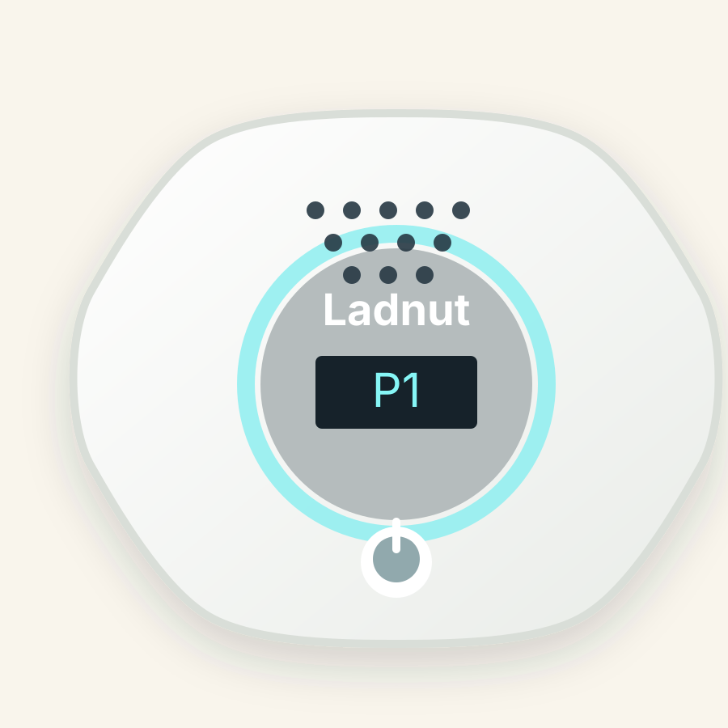
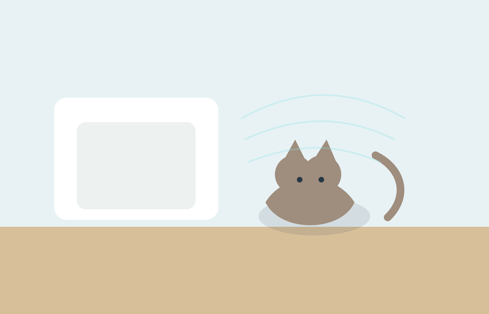
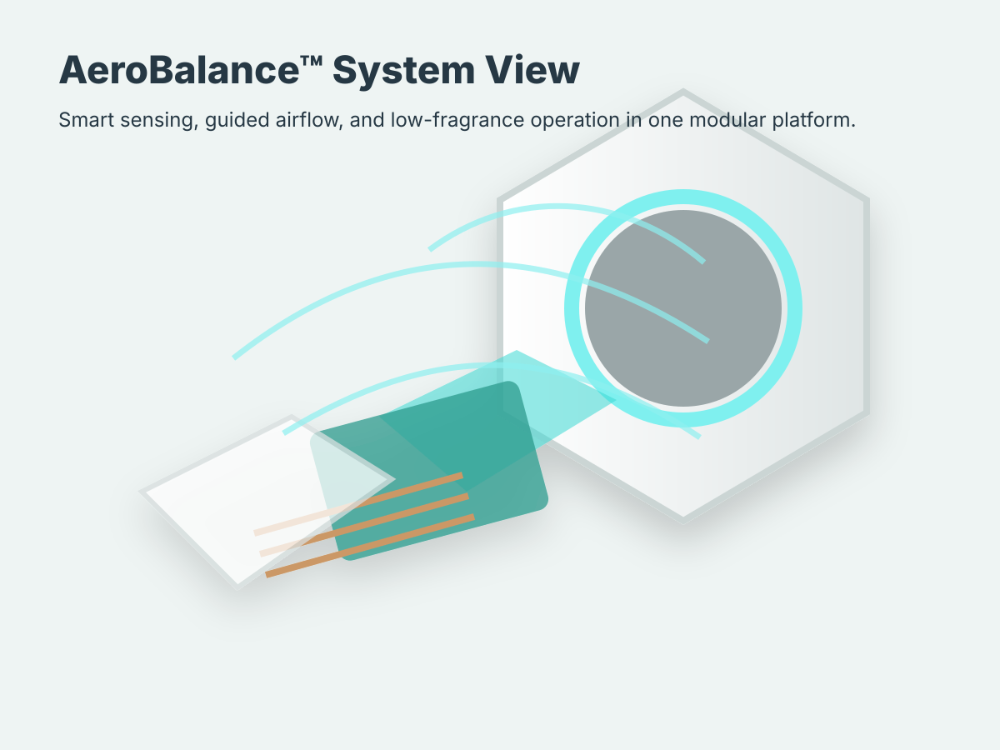

AeroBalance™Clean Air
Smart Odor Control Device
Place near odor-prone pet spaces and select the operation mode that fits the moment.
Shop nowClean Air & Odor Control Series
AeroBalance™ Micro-Molecular AirCare System is designed to target odor where pet life happens while preserving the warm, comfortable feeling of home.


Technical pillars
The technology story is written for Amazon Storefront use: clear, concise, visual, and free from unsupported medical or exaggerated performance claims.
Targets odor-prone moments in pet spaces.
Supports simple, responsive operation.
Designed for homes that prefer subtle freshness.
Fits near litter areas, pet beds, closets, and entry zones.
“Designed for the real rooms pets use every day.”

Place near odor-prone pet spaces and select the operation mode that fits the moment.
Shop nowWhere it fits
Use clean, modular placement tiles rather than cluttered comparison charts or before-and-after claims.
Place nearby with ventilation and room to circulate air.
Support a fresher-feeling rest area without heavy scent.
Ideal for leashes, shoes, and everyday pet traffic.
Compact enough for small-home freshness moments.